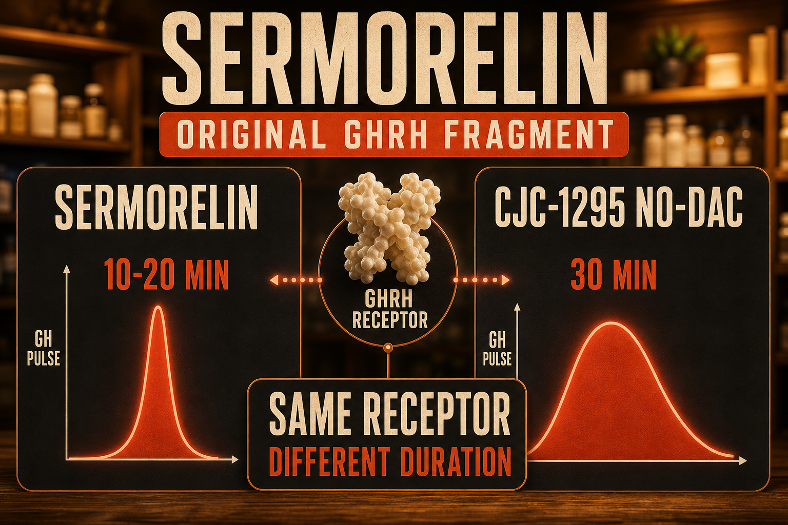

What Sermorelin Is
Sermorelin (GHRH 1-29) is a synthetic 29-amino-acid peptide representing the first 29 amino acids of endogenous GHRH - the same active fragment from which CJC-1295 No-DAC is derived. Sermorelin was FDA-approved for diagnosis of GH deficiency in children in 1998 (approval later withdrawn due to commercial reasons, not safety), and it has since maintained a presence in the compounding pharmacy market for adult anti-aging and GH wellness applications.
Sermorelin has a significantly shorter half-life than CJC-1295 No-DAC (10-20 minutes versus 30 minutes), requiring more frequent dosing to achieve similar sustained IGF-1 elevation. For this reason CJC-1295 No-DAC is generally preferred in clinical combination protocols. However, Sermorelin holds a distinct regulatory position - its compounding status under 503A is different from CJC-1295's, making it more accessible through certain prescribing channels. Sermorelin was available from many compounding pharmacies before CJC-1295 became widely compounded.
The mechanism is identical in principle to CJC-1295 No-DAC - GHRH receptor agonism in the anterior pituitary producing GH release - but with shorter duration pharmacokinetics.
Plain English Version
The Original Model Before the Upgrade
Sermorelin is the original version of the same tool that CJC-1295 No-DAC later improved. Both do the same job - give the pituitary the GHRH signal to release growth hormone. Sermorelin does it for about 10-20 minutes before the body clears it. CJC-1295 No-DAC extends that window to about 30 minutes through synthetic modifications.
The core mechanism is identical. The half-life is shorter. This means sermorelin works - it just requires more frequent dosing to maintain the same level of GH stimulation that CJC-1295 achieves with fewer injections. Many people run sermorelin twice daily where they might run CJC-1295 once.
Sermorelin's original FDA-cleared diagnostic history and its established compounding pharmacy presence make it a legitimate first option - particularly for people accessing peptide therapy through a prescribing physician.
One sentence: Sermorelin is the original GHRH fragment - same receptor and mechanism as CJC-1295, shorter half-life, widely available through compounding pharmacies.
How To Picture It

How It Works
Sermorelin binds GHRH receptors in the anterior pituitary with the same mechanism as endogenous GHRH. The shorter half-life versus CJC-1295 is because sermorelin lacks the synthetic amino acid modifications that slow enzymatic degradation. More frequent dosing compensates - twice daily sermorelin produces comparable cumulative GH/IGF-1 elevation to once-daily CJC-1295 No-DAC.
Documented Benefits
validated safety record
Dosing Protocol
| Phase | Dose | Frequency | Timing |
|---|---|---|---|
| Standard | 200-300mcg | Once or twice daily | Fasted, bedtime preferred |
| Clinical | 200mcg | Daily | Bedtime fasted |
| With Ipamorelin | 200mcg Serm + 200mcg Ipa | Daily or twice daily | Fasted, bedtime |
More frequent dosing required versus CJC-1295 due to shorter half-life. Cycle 8-12 weeks on, 4 weeks off.
Reconstitution Standard
SML (5mg vial) + 2ml BAC water = 2.5mg/ml 200mcg = 8 units | 300mcg = 12 units
Dosage Build-Up Timeline
- Week 1-2: 200mcg once daily bedtime - tolerance
- Week 3-8: 200-300mcg daily or twice daily
- Week 9-12: Reassess; consider upgrading to CJC-1295 if more convenience desired
- Week 13-16: Mandatory 4-week off cycle
Common Mistakes
shorter half-life requires more frequent dosing for equivalent effect
same mechanism, different pharmacokinetics
adding Ipamorelin significantly amplifies the GH pulse
same fasting and timing considerations apply
Contraindications And Cautions
GH/IGF-1 elevation
WADA prohibited
What To Track
- Sleep quality weekly
- Body composition monthly
- IGF-1 at baseline and 8-12 weeks
- Energy and recovery weekly
Stacks Well With
- Ipamorelin - the most common combination; dual-pathway GH amplification
- BPC-157 or KLOW - repair alongside GH
- AOD9604 - fat-targeting alongside GH support
Sources
- Peptideslabuk GH Secretagogue Comparison 2026. peptideslabuk.com
- Superpower.com CJC-1295 Ipamorelin Stack April 2026. superpower.com
- Prakash A, Goa KL. Sermorelin review. BioDrugs 1999. pubmed.ncbi.nlm.nih.gov
- Walker RF. Sermorelin aging. Clinical Interventions in Aging 2006. pubmed.ncbi.nlm.nih.gov
- FDA sermorelin regulatory history. fda.gov
For educational and research documentation purposes only. Not medical advice. Always speak with a qualified healthcare professional before making health decisions.